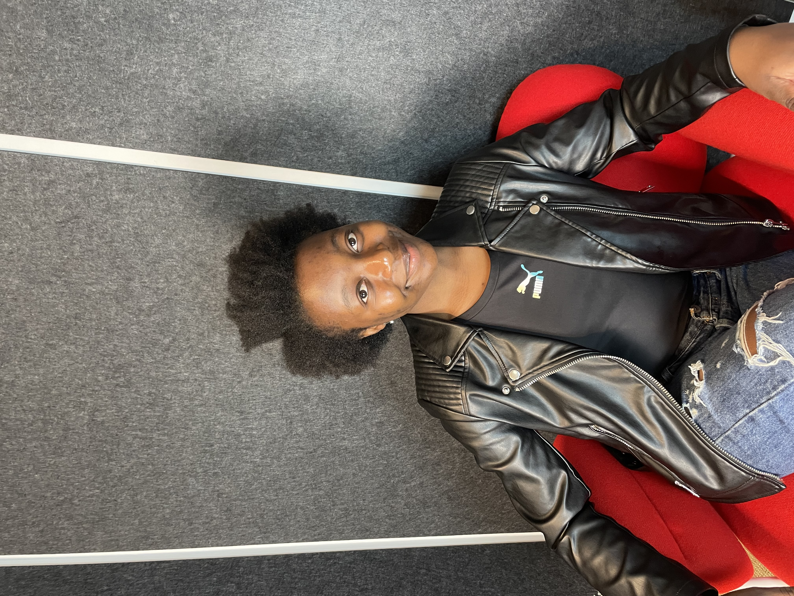

 A standing innovator, I have not only embraced technology but also dedicated myself to mentoring and guiding others in the field. My passion for programming and web development is driven by a deep curiosity and a commitment to continuous learning. As an aspiring computer programmer and web developer, I actively seek opportunities that align with my chosen career path, ensuring that I stay ahead of industry trends and best practices. Having successfully completed a certificate in mobile application and web development, I have acquired a strong foundation in designing, developing, and deploying software solutions. This formal education, combined with my self-taught expertise, has allowed me to refine my problem-solving skills, adaptability, and ability to work independently on complex projects.